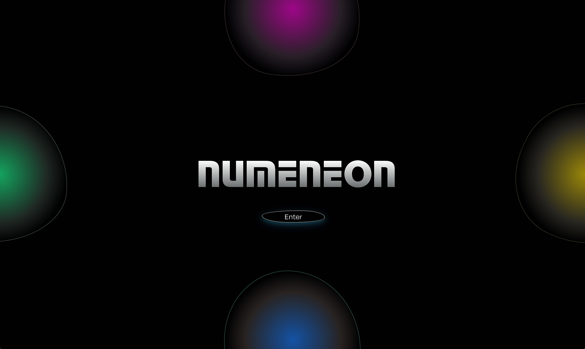
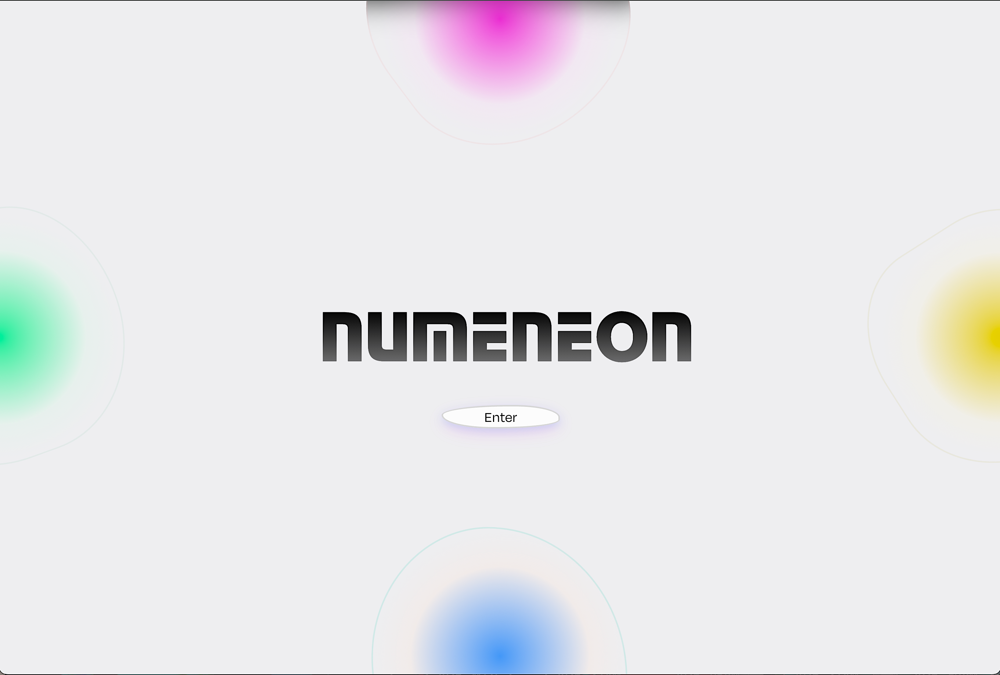

About the Project
Numeneon is a "neopunk" social media platform built on the belief that feeds should serve people, not harvest attention. At its core is the River Timeline—a three-column chronological feed (Thoughts, Media, Milestones) where each friend gets their own row, capping at 12 posts per category so you can actually finish catching up instead of doom-scrolling forever.
The bigger vision is the Smart Feed Algorithm—a "boost" system that surfaces underseen posts so every voice gets heard, blending 30% boosted (underexposed creators), 20% hot (high engagement), and 50% chronological. It's anti-viral by design: the more something goes viral, the more it gets throttled, because outrage shouldn't win.
Add real-time messaging via WebSockets, and below the neon-lit main floor, a hidden MySpace Basement with Top 8 friends, custom themes, and embedded music players. Built for people who think the internet should work for you, not extract from you.
The platform also includes a Daily Learning page featuring methods, loops, Big O notation, mythology culture curated weekly, plus a word of the day and tech term of the day—because I wanted to build something I would actually use.
Tech Stack
My Role
UI Architect & Fullstack Architect on a 4-person team. I built the scaffolding and planning for the app, the Timeline River UI, Profile Card flip system, Activity Visualization (Wave Chart + Heatmap), Messaging Modal, mobile responsiveness, and the entire SCSS design system.
Project Type
Collaborative Bootcamp Project
Key Features
River Timeline
Three-column feed with epoch-based grouping and carousel navigation. One user, one row—no infinite scroll chaos.
Profile Flip Card
Dual-sided card showing profile info on front, analytics dashboard with wave chart and heatmap on back.
Real-time Messaging
WebSocket-powered DMs with conversation list and instant notifications.
Theme Toggle
Dark mode (cyberpunk neon) and light mode (clean minimal) with persistent preferences.
Mobile Responsive
Tab-based navigation and optimized layouts for mobile viewing.
Global Search
Search modal for finding users and posts across the platform.
The River Timeline
┌─────────────────────────────────────────────────────────┐
│ RIVER TIMELINE │
├───────────────┬───────────────┬─────────────────────────┤
│ 💭 THOUGHTS │ 🖼️ MEDIA │ 🏆 MILESTONES │
│ Text posts │ Photos/videos │ Achievements │
├───────────────┼───────────────┼─────────────────────────┤
│ User A Ep2 │ User A Ep2 │ User A Ep2 │
│ [◀ 2/12 ▶] │ [◀ 1/12 ▶] │ │
├───────────────┼───────────────┼─────────────────────────┤
│ User B │ User B │ User B │
│ [◀ 5/12 ▶] │ [◀ 3/12 ▶] │ [◀ 1/12 ▶] │
├───────────────┼───────────────┼─────────────────────────┤
│ User A Ep1 │ User A Ep1 │ User A Ep1 │
│ [12/12 full] │ [◀ 3/12 ▶] │ │
└───────────────┴───────────────┴─────────────────────────┘
Posts grouped by user, capped at 12 per category—so you can actually finish your feed.
Design System
Colors
#4fffff
#c9a8ff
#1ae784
#e94ec8
Effects
- Glassmorphic surfaces with backdrop blur
- Neon glow shadows
- Chamfered corners (clip-path)
- Scan line overlays